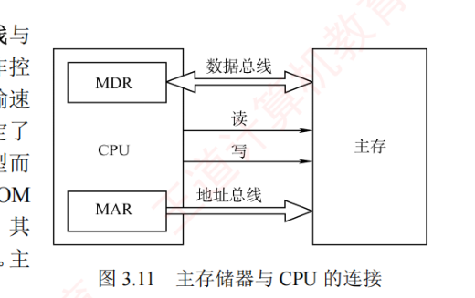
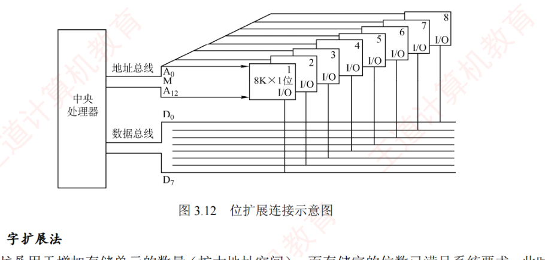
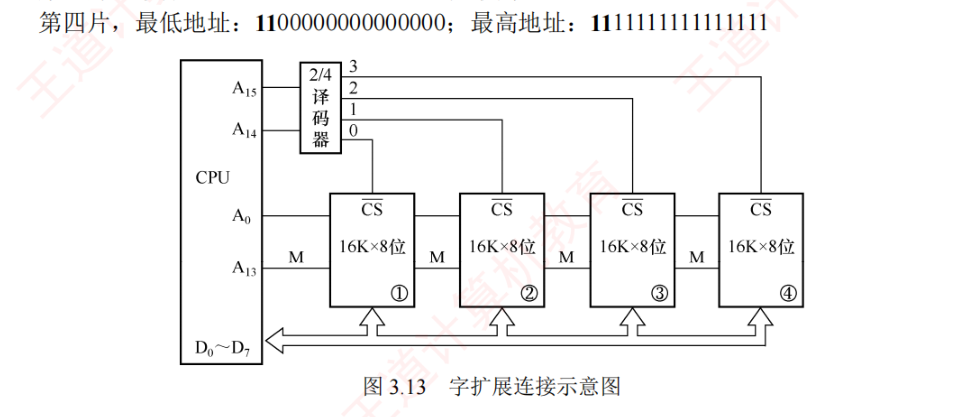
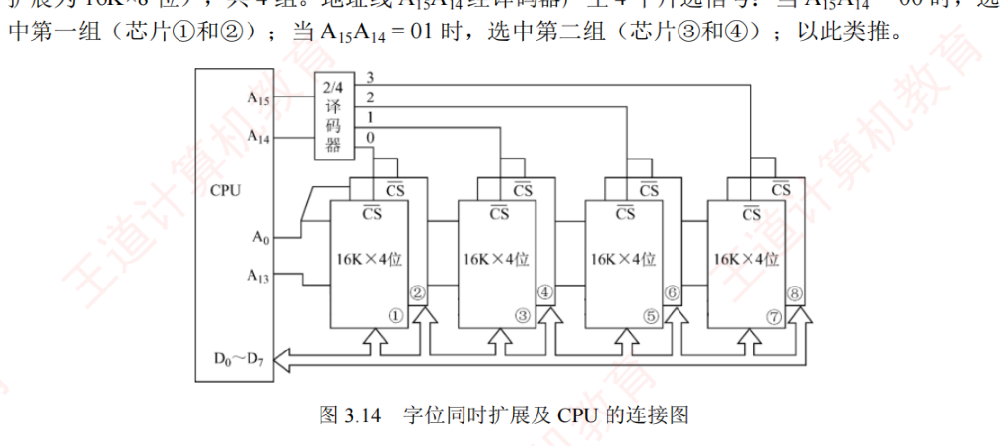

3.3 主存储器与 CPU 的连接
这一节解决「芯片不够大怎么办」：先看主存与 CPU 之间三类总线怎么接、不同芯片的控制线有什么差异（3.3.1），再掌握主存容量扩展的三种方法——位扩展、字扩展、字位同时扩展（3.3.2）。芯片数计算与各片地址范围的划分是本节的核心考法，综合题几乎年年从这里出。
3.3.1连接原理
主存储器通过数据总线、地址总线和控制总线与 CPU 相连，三条总线协同完成数据传输与地址定位、操作控制：
- 数据总线：其位数与工作频率共同决定数据传输速率，二者的乘积正比于理论带宽；
- 地址总线：其位数决定了 CPU 可寻址的最大内存空间；
- 控制总线：控制线因存储器类型而异——SRAM 芯片通常包含片选与读/写控制信号线；ROM 芯片仅需片选线（只读无须写控制）；DRAM 芯片一般不设独立片选线，其芯片选择通过行地址选通信号或外部译码逻辑实现。

由于单个存储芯片的容量有限，实际系统中通常通过存储器扩展技术将多个芯片集成在内存条上，并结合主板上的 ROM，共同构成计算机所需的存储空间，再经由系统总线与 CPU 连接。
3.3.2主存容量的扩展
当单个存储芯片的字数（存储单元数量）或字长（每个存储单元的位数）无法满足实际主存需求时，需要在位和字两个方向进行扩展，以构建所需容量的存储器。芯片数的一条总算式：
$$\text{所需芯片数} = \underbrace{\frac{\text{总字数}}{\text{每片字数}}}_{\text{字方向}} \times \underbrace{\frac{\text{总位数}}{\text{每片位数}}}_{\text{位方向}}$$1. 位扩展法
位扩展用于增加存储字的长度，适用于 CPU 数据线位数大于单个芯片数据位宽的情况。通过并联多个芯片，使其总数据位宽与 CPU 总线匹配。连接方式：各芯片的地址线、片选线和读/写控制线并联，接至系统对应总线；数据线单独引出，分别连接到系统数据总线的不同位，所有芯片同时工作，共同提供一个完整的字。
【例】用 8 片 8K×1 位的 RAM 芯片构成 8K×8 位的存储器。位方向芯片数 = 8位/1位 = 8 片（字方向不变，8K/8K = 1）；各芯片的地址线 \(\mathrm{A}_{12} \sim \mathrm{A}_0\)（\(8\mathrm{K} = 2^{13}\)，共 13 根）、片选线和读/写控制线均连在一起，每片的数据线依次对应 CPU 数据总线的一位。

2. 字扩展法
字扩展用于增加存储单元的数量（扩大地址空间），而存储字的位数已满足系统要求。此时系统数据线位数等于芯片数据线位数，而系统地址总线的位数多于芯片地址线位数。连接方式：各芯片的低地址线接系统地址总线的低位，数据线和读/写控制线并联至系统总线；系统地址总线的高位经译码器生成片选信号，分时选中不同芯片，各芯片分时工作。
- 第一片：最低地址
0000000000000000，最高地址0011111111111111（16 位） - 第二片：最低地址
0100000000000000，最高地址0111111111111111 - 第三片：最低地址
1000000000000000，最高地址1011111111111111 - 第四片：最低地址
1100000000000000，最高地址1111111111111111

3. 字位同时扩展法
当芯片的字长和容量均不足时，需同时进行位扩展和字扩展。该方法将位扩展后的芯片组视为一个逻辑单元，再对这些单元进行字扩展。连接方式：先将若干芯片按位扩展方式连成一组（满足字长要求）；再将多组按字扩展方式连接，系统地址总线的低位接各组内各芯片的地址引脚，高位经译码器生成各组的片选信号。
【例】用 8 片 16K×4 位的 RAM 芯片构成 64K×8 位的存储器。所需芯片数 = (64K/16K) × (8/4) = 4 × 2 = 8 片：每 2 片组成一组（位扩展为 16K×8 位），共 4 组。地址线 \(\mathrm{A}_{15}\mathrm{A}_{14}\) 经译码器产生 4 个片选信号：\(\mathrm{A}_{15}\mathrm{A}_{14}=00\) 时选中第一组（芯片①和②）；\(=01\) 时选中第二组（芯片③和④）；以此类推。片内地址由 \(\mathrm{A}_{13} \sim \mathrm{A}_0\) 共 14 位给出（\(16\mathrm{K} = 2^{14}\)）。
